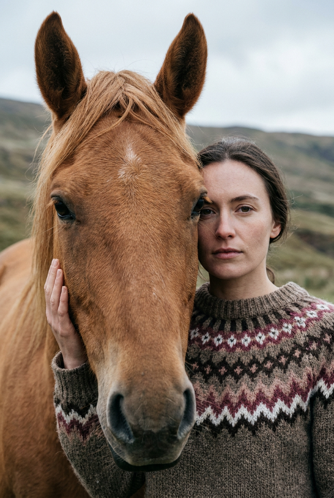
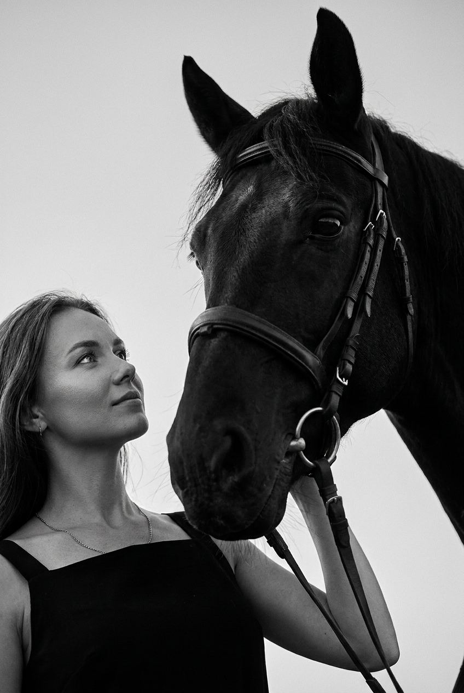
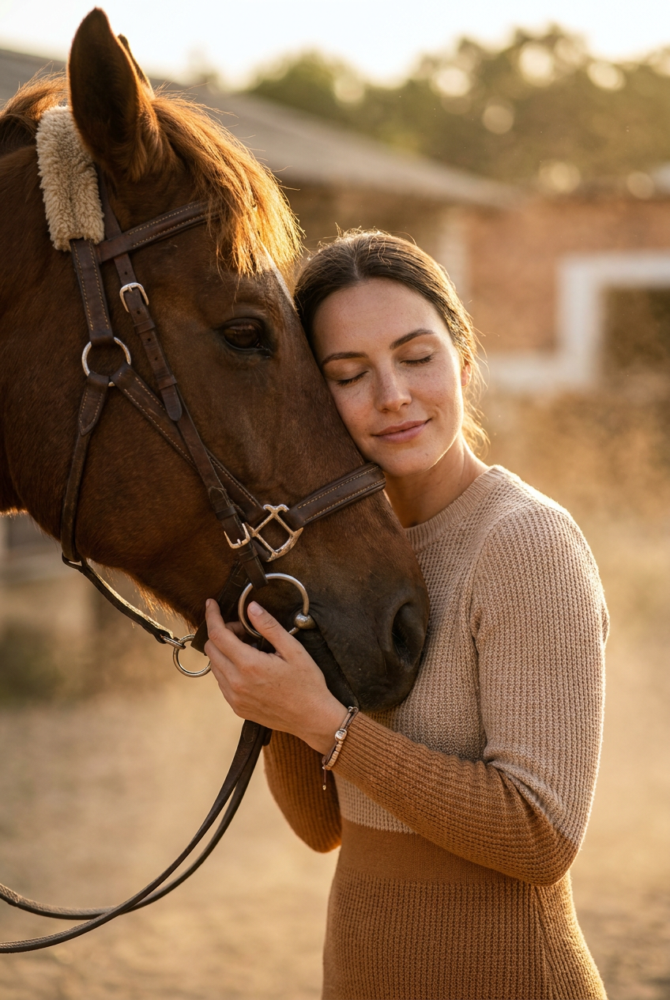
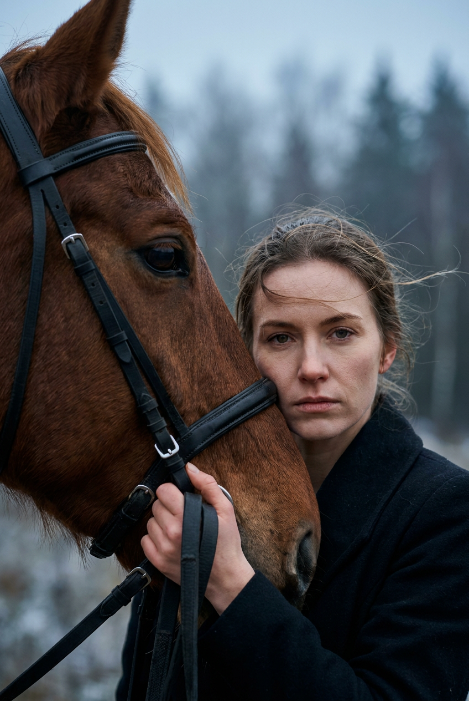
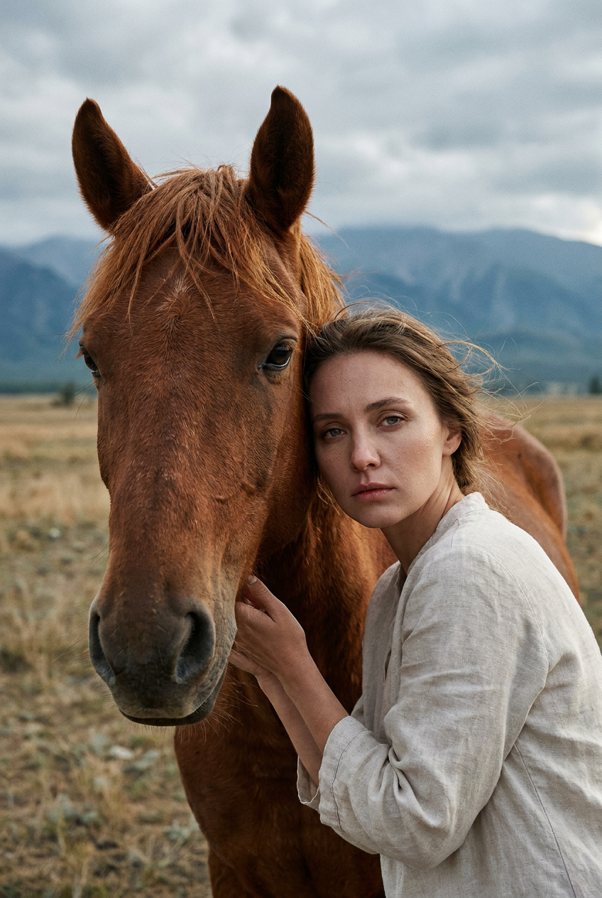
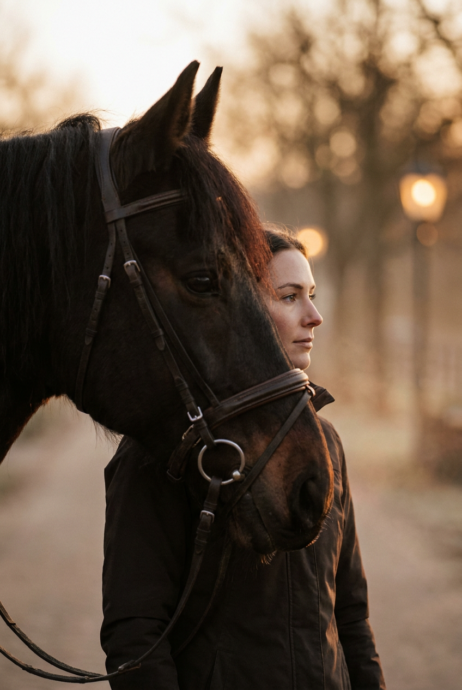
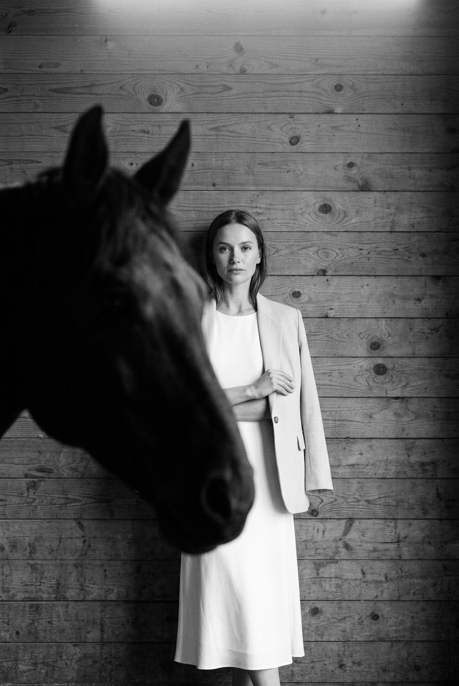
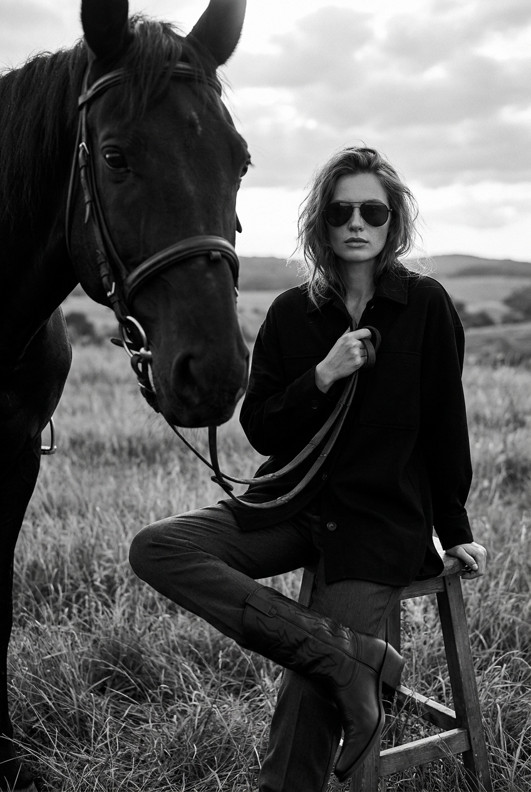

ИИ-фото с лошадью: 8 промптов для нейросети

Обычный снимок с лошадью не всегда получается выразительным: животное закрывает лицо, поза выглядит скованно, а шерсть и кожа превращаются в пластиковую текстуру. Генерация помогает заранее задать композицию, свет, настроение и характер контакта между человеком и лошадью.
В подборке — восемь готовых сценариев: от крупного портрета с рыжей лошадью до чёрно-белой fashion-съёмки в поле, нежного объятия, профильного кадра на закате и строгой сцены в старой конюшне.
Как сгенерировать такое фото: пошагово
Нужен снимок анфас при ровном свете, лицо в кадре целиком, без тёмных очков и головных уборов. Разрешение от 1000 пикселей по короткой стороне. Чем чётче исходник, тем точнее модель повторит черты.
Выберите сценарий ниже и нажмите «Копировать» — текст уйдёт в буфер целиком, вместе с командой сохранения внешности. Эта команда стоит первой строкой и отвечает за то, чтобы на выходе было ваше лицо, а не случайное.
Кнопка «Сгенерировать» рядом с каждым промптом открывает модель в новой вкладке. Nano Banana Pro работает с референсом лица — в отличие от моделей, которые генерируют портрет с нуля и узнаваемость теряют.
Промпт — в поле ввода, портрет — через загрузку референса. Порядок значения не имеет, но без референса команда сохранения внешности работать не будет: модели нечего сохранять.
Для сторис и ленты берите 9:16, для превью и обложек — 4:3. Первый результат редко идеален: если поза или свет ушли не туда, поправьте соответствующую часть промпта и запустите заново. Обычно хватает двух-трёх итераций.
8 промптов для генерации
1. Портрет рядом с лошадью
Строго сохранить внешность по загруженному референсу: черты лица, пропорции, мимику и текстуру кожи без изменений. Вертикальная фотореалистичная кинематографичная фотография, крупный портрет с естественной глубиной резкости, объектив 85 мм, диафрагма f/2.8. Слева почти половину кадра занимает голова рыжевато-гнедой лошади тёплого коричневого оттенка: большие уши, спокойный взгляд, хорошо различимые отдельные волоски на морде и переносице, естественные складки у ноздрей и губ, внизу видны шея и фрагмент корпуса. Справа, вплотную к животному, стоит девушка; её лицо и верх тела открыты для камеры, лицо соответствует загруженному референсу. Она смотрит прямо в объектив, выражение серьёзное и собранное, губы нейтрально сомкнуты. Реалистичная текстура кожи, натуральный макияж с акцентом на глаза. Девушка частично перекрыта контуром лошади, но остаётся хорошо различимой. Мягкий естественный дневной свет, натуральные цвета, высокая детализация шерсти и кожи, вертикальное соотношение 4:5.
2. Монохромный взгляд снизу

Строго сохранить внешность по загруженному референсу: черты лица, пропорции, мимику и текстуру кожи без изменений. Фотореалистичный чёрно-белый fashion-портрет с высоким контрастом, вертикальный кадр 4:5, съёмка снизу на объектив 50 мм, диафрагма f/2.8. Фон почти пустой: светло-серое небо без деталей, над персонажами много воздуха. Композиция построена по диагонали. На переднем плане справа и в центре доминирует вороная лошадь, снятая близко и с низкой точки; её крупная голова наклонена вниз и повернута к девушке. Видны уши, ноздри, губы, складки вокруг глаз и морды, блестящая густая шерсть с отдельными волосками. На лошади тёмная кожаная уздечка, ремни, металлические кольца и пряжки с мягкими бликами, без чрезмерного блеска. Девушка находится ниже и левее головы лошади, лицо соответствует загруженному референсу; она смотрит на животное, выражение спокойное и задумчивое. Чистая графика, глубокие тени, выразительная фактура, без лишних объектов.
3. Нежное прикосновение

Строго сохранить внешность по загруженному референсу: черты лица, пропорции, мимику и текстуру кожи без изменений. Вертикальная кинематографичная фотография в фотореалистичном стиле, объектив 85 мм, малая глубина резкости, мягкий рассеянный дневной свет. Слева крупным планом стоит гнедая коричневая лошадь, справа к её морде близко наклонилась девушка; лицо девушки соответствует загруженному референсу. Она прижимается щекой к животному, глаза закрыты или слегка прикрыты, выражение нежное, доверительное и спокойное. Одной рукой девушка держит повод и аккуратно касается кожаной уздечки у морды. Волосы немного растрёпаны ветром. На ней вязаное или плотное тканевое платье тёплого бежево-карамельного оттенка, заметны фактура материала и мягкие складки рукавов, на запястье тонкий браслет. Голова лошади занимает большую часть левой стороны; видны ремни сбруи, металлические детали с лёгкими бликами, пушистая грива и отдельные волоски шерсти. Цветовая палитра тёплая, фон мягко размыт, настроение интимное и спокойное, вертикальный формат 4:5.
4. Серьёзный взгляд в камеру

Строго сохранить внешность по загруженному референсу: черты лица, пропорции, мимику и текстуру кожи без изменений. Фотореалистичный кинематографичный портрет на улице, вертикальная композиция 4:5, объектив 70 мм, диафрагма f/2.8. В левом переднем плане крупно показана голова коричневой лошади; морда занимает значительную часть изображения. На животном чёрная кожаная сбруя с поводьями, металлическими пряжками и креплениями, детали хорошо различимы, но не выглядят глянцевыми. Девушка стоит очень близко, прижимается к лошади и одной рукой удерживает ремень у её морды. Её лицо соответствует загруженному референсу, взгляд направлен в объектив, выражение спокойное и серьёзное. Натуральная кожа, детально прорисованные глаза, лёгкий макияж. Волосы слегка растрёпаны ветром, отдельные пряди выделяются на фоне. Съёмка в пасмурную погоду: холодные приглушённые оттенки, мягкий рассеянный свет, вдали размытый открытый пейзаж без отвлекающих деталей. Реалистичные пропорции человека и животного, точная текстура шерсти и кожи.
5. Тёплое объятие с лошадью

Строго сохранить внешность по загруженному референсу: черты лица, пропорции, мимику и текстуру кожи без изменений. Вертикальный фотореалистичный портрет в кинематографичной стилистике, объектив 85 мм, диафрагма f/2.8, мягкий естественный свет. Слева на переднем плане находится голова и часть шеи рыжей гнедой лошади тёплого рыжевато-коричневого оттенка. У животного густая грива, уши подняты, взгляд спокойный и мягкий, на шерсти видны отдельные волоски. Справа почти вплотную стоит девушка, её лицо соответствует загруженному референсу и развёрнуто к камере в три четверти. Она опирается щекой на шею лошади, а руки располагает под её подбородком или у верхней части груди, создавая ощущение бережного объятия. Выражение девушки сдержанное, слегка печальное, взгляд направлен прямо в объектив. Натуральный макияж, реалистичная кожа, без глянцевого эффекта. Лошадь и девушка занимают почти весь кадр, фон мягко размытый, тёплая природная палитра, высокая детализация, вертикальное соотношение 4:5.
6. Профиль на закатном свету

Строго сохранить внешность по загруженному референсу: черты лица, пропорции, мимику и текстуру кожи без изменений. Крупный вертикальный кинематографичный кадр, фотореалистичная съёмка на объектив 85 мм, диафрагма f/2.8. В переднем плане доминируют голова и шея тёмно-коричневой почти чёрной лошади; животное частично закрывает силуэт девушки, создавая глубину и ощущение близости. Видны густая грива, кожаные ремни уздечки и металлические пряжки с приглушёнными бликами. Девушка расположена позади лошади, немного правее, её лицо соответствует загруженному референсу и показано в профиль. Она смотрит вдаль, выражение задумчивое и спокойное. На девушке матовая чёрная куртка или пальто с мягкими складками. Сцена происходит на улице в золотой час — на рассвете или закате, либо в полутени; тёплый янтарный свет скользит по краям лица, гривы и плеч, фон растворяется в мягком размытии. Атмосфера тихая, созерцательная, без лишних предметов, вертикальный формат 4:5.
7. Белый образ в конюшне

Строго сохранить внешность по загруженному референсу: черты лица, пропорции, мимику и текстуру кожи без изменений. Фотореалистичная чёрно-белая кинематографичная сцена с высоким контрастом, вертикальный кадр 4:5, объектив 50 мм, диафрагма f/4. Внутри старого сарая или конюшни на заднем плане видна широкая деревянная стена из вертикальных досок: сучки, трещины, потёртые участки и неровная фактура хорошо различимы. В центре стоит женщина, её лицо соответствует загруженному референсу; взгляд направлен прямо в камеру, выражение нейтральное и спокойное. На ней элегантный белый образ: платье длины миди прямого силуэта без заметных принтов и светлый жакет с длинными рукавами и подчёркнутой линией плеч. Руки опущены и слегка сведены перед собой, поза статичная и уверенная. На переднем плане частично присутствует лошадь, её голова или шея создают дополнительный слой композиции и перекрывают нижнюю часть кадра. Натуральная текстура кожи, без пластикового эффекта; мягкий боковой свет, глубокие тени, монохромная тональность.
8. Ковбойский fashion-портрет

Строго сохранить внешность по загруженному референсу: черты лица, пропорции, мимику и текстуру кожи без изменений. Фотореалистичная чёрно-белая fashion-фотография с высоким контрастом, вертикальный формат 4:5, объектив 50 мм, диафрагма f/4. В центре открытого поля женщина сидит на низком деревянном стуле или табурете. На ней тёмная свободная одежда в стиле casual/high fashion: чёрная рубашка или оверсайз-куртка с мягким воротником и свободными полами, тёмные прямые брюки, чёрные ботинки или ковбойские сапоги из матовой кожи. Одна нога слегка подогнута, поза расслабленная, но уверенная. На лице тёмные очки — авиаторы или округлая модель, глаза скрыты за линзами; волосы немного растрёпаны. Одной рукой женщина держит повод или ремень возле лошади, на уровне груди прижимая его к верхней части стойки, второй опирается на стул или край деревянной конструкции. Слева в кадре находится лошадь, видны её голова, шея и часть корпуса; животное спокойно смотрит в сторону камеры. Просторное поле, неброский горизонт, мягкий естественный свет, выразительные тени и зернистая журнальная фактура.
Что важно учесть в этом стиле
Лошадь должна быть частью композиции, а не случайным объектом на заднем плане. Сразу указывайте, где находится её голова, какую долю кадра она занимает и как взаимодействует с моделью: девушка касается уздечки, прижимается щекой или стоит позади шеи.
Для реалистичного результата задавайте фактуру шерсти, гривы, кожи и кожаной сбруи. Портретам подойдут объективы 70–85 мм и диафрагма f/2.8: лицо и морда останутся резкими, а фон мягко уйдёт в размытие. В чёрно-белых сценах отдельно прописывайте контраст, направление света и детали теней.
Идеи для вариаций
- Замените открытое поле на туманную конюшню, пляж после дождя или лесную дорогу.
- Попробуйте серую, белую или пятнистую лошадь, сохранив ту же позу и схему света.
- Добавьте дождевые капли на гриве, лёгкий ветер в волосах или подсветку контровым солнцем.
- Сделайте серию в разных форматах: портрет 4:5, обложка 2:3 и широкий кадр 16:9.
- Поменяйте настроение на тревожное, романтичное или редакционное, не меняя расположение персонажей.
Как собрать свой промпт
Начните с типа съёмки и формата: например, «фотореалистичный вертикальный портрет, объектив 85 мм, f/2.8». Затем опишите лошадь — масть, положение головы, видимую часть тела и детали упряжи. После этого задайте позу девушки, направление взгляда, одежду и эмоцию.
В финале добавьте локацию, время суток, свет, фон и ограничения: естественная кожа, правильные пропорции, отдельные волоски шерсти, без лишних конечностей и предметов. Если лицо берётся с референса, укажите это после описания сцены, а результат проверяйте серией из 4–8 генераций с небольшими изменениями света или ракурса.
Ошибки, из-за которых кадр не получается
- Слишком общая композиция. Без указания сторон кадра и масштаба лошадь может закрыть лицо или оказаться далеко на фоне.
- Несовместимые ракурсы. Не смешивайте профиль девушки с прямым взглядом в камеру, если это не задумано отдельно.
- Пластиковая шерсть. Добавляйте отдельные волоски, складки у ноздрей, детали гривы и матовые металлические элементы.
- Перегруженный фон. Лишние люди, заборы и предметы перетягивают внимание с пары; задавайте спокойную локацию и мягкое размытие.
- Случайная одежда. Описывайте материал, цвет, длину и силуэт, иначе нейросеть смешает платье, куртку и аксессуары.
Частые вопросы
Как сделать такое ИИ-фото бесплатно?
Можно попробовать Kandinsky и «Шедеврум»: они позволяют создавать изображения без оплаты, но результат зависит от очереди, лимитов и текущих настроек сервиса. Krea AI и Arena.ai удобны для экспериментов и сравнения генераций, однако бесплатный доступ может быть ограничен числом попыток, скоростью или разрешением. Работа с референсом лица поддерживается не одинаково: иногда изображение можно загрузить напрямую, а иногда придётся описывать внешность текстом. Для точного сходства готовьте качественный портрет анфас и проверяйте правила сервиса.
Почему нейросеть искажает лицо на снимке с лошадью?
В сцене много сложных деталей: близко расположенные лица, уздечка, грива и перекрытия объектов. Упростите фон, оставьте один источник света и отдельно укажите положение головы девушки. Лучше генерировать несколько вариантов, а затем усиливать сходство через режим референса или редактор изображения.
Как добиться естественного контакта девушки и лошади?
Опишите конкретное действие: девушка касается ремня у морды, прижимается щекой к шее или держит повод одной рукой. Добавьте спокойное выражение животного, правильную анатомию рук и отсутствие сильного натяжения поводьев. Чем точнее указаны точки соприкосновения, тем меньше случайных поз.
Какой формат выбрать для публикации такого фото?
Для поста или обложки подборки подойдёт вертикальный формат 4:5, для сторис — 9:16, а для широкого баннера — 16:9. Сначала генерируйте сцену в максимально доступном разрешении, затем кадрируйте её под площадку. Не обрезайте уши лошади и верх головы модели: эти детали помогают сохранить баланс композиции.